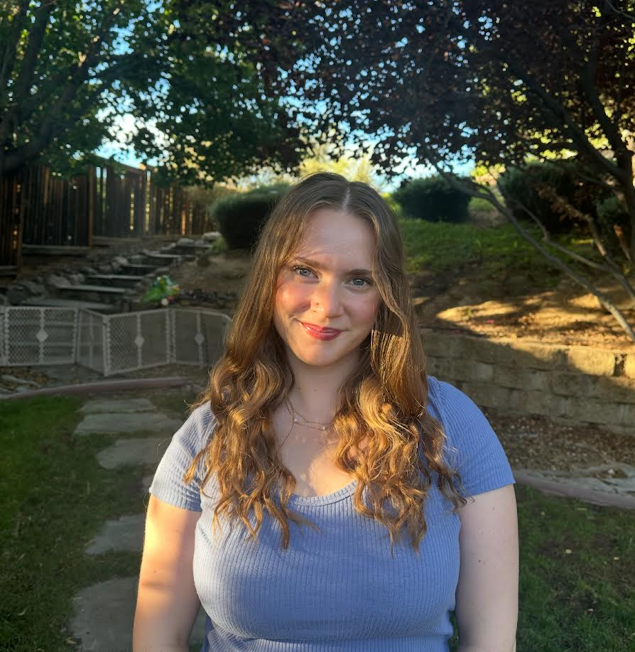
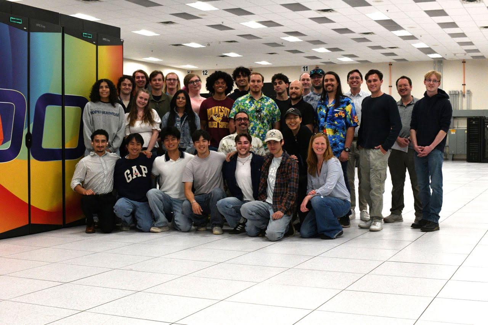
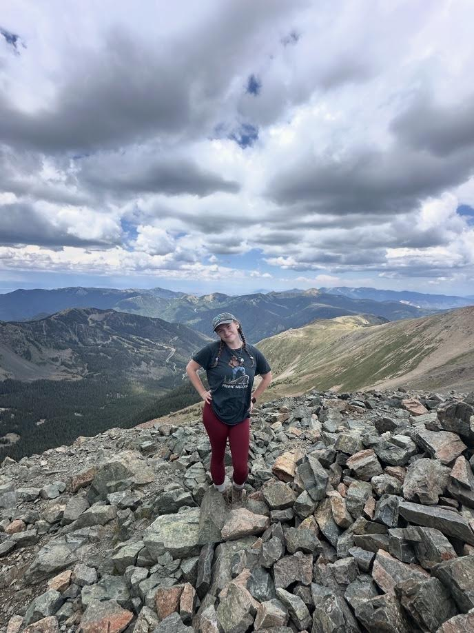

About Me

Hello! My name is Isabella Staley. I am a college student studying Information Technology and minoring in Business Administration at Wayne State University. With hands-on experience in high-performance computing, systems administration, and cybersecurity. I've spent two summers interning at national laboratories, where I built and administered HPC clusters, automated infrastructure with Ansible, and worked with technologies like Linux, Kafka, OpenCHAMI, and cloud storage. I enjoy working at the intersection of software, systems, and infrastructure, using both problem-solving and programming skills to build reliable and scalable technology. My experience includes deploying HPC clusters, developing monitoring and data pipelines, and working with distributed systems and automation. I enjoy learning new things, working on projects, and developing skills that I can use in my future career.
My Education
I am currently working toward my Bachelor's degree in Information Technology.
My education has given me opportunities to learn about technology, problem-solving, programming, and computer systems.
My Current Classes
Some of the subjects I am studying include:
- Information Technology Security
- Cyber Security Practice
- Mobile Application Development
My Favorite Things
My Three Favorite Interests
- Technology and computers
- Hiking and exploring nature
- Traveling and visiting new places


Some of My Interests
| Category | Interest | Description |
|---|---|---|
| Technology | Computers | Learning about technology and IT. After spending two summers at National Laboratorys, I've been able to work with incredible students, mentors, and peers. Gaining experience that couldn't be replicated. I also love the hands on work, at both labs build and administer a production-grade HPC cluster from bare metal, configuring network infrastructure, DHCP services, SSH access, with automated provisioning using Ansible and implementing CI/CD. My projects differ after I built my cluster. I loved my enivorment and it always felt like time was flying when I was at the office, espeically when we were in the server rooms. |
| Outdoor Activities | Hiking | Exploring trails and nature. Especially this summer, I got to explore a state I'd never expect to go to. New Mexico, I am truly so grateful to see the west it is such a beautiful and diverse state. I spent just about every day going on some sort of hike, and I've got tons of blisters to prove that. |
| Travel | Road Trips | Visiting new places and destinations. I was lucky enough to be able to go on a 7 day road trip from MI to CA for an internship in 2025. We went to 7 states and got to see places like: St. Louis, Red Rocks, the Grand Canyon, a last minute Las Vegas pitstop, and Hollywood! We even stopped in the place I'd be spending my next summer at, New Mexico. Being able to take such a long and beautiful roadtrip has allowed me to experience things most cannot and am truly grateful. One of the best parts is meeting wonderful people from all over the world. |
An Interesting Website
One website I enjoy exploring is the National Park Service website. It provides information about national parks, outdoor activities, and places to visit. As I truly love finding new spots and being able to bring a little bit of Michigan to new places! I used this website a whole lot during this summer as I was in New Mexico for a super insightful and fun internship.
Visit the National Park ServiceMy College Experience
Visit my course page to learn more about the classes I have taken and some of the projects and assignments I have completed.
View My Courses and Projects